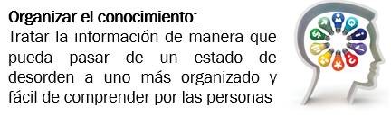
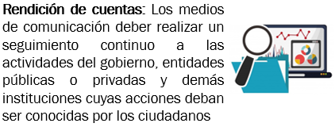
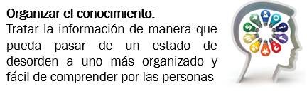
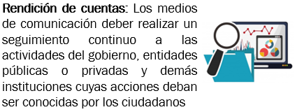

Módulos AMID
AMI y la participación cívica
Información
Al finalizar esta unidad el docente podrá entender las funciones de los medios y tecnologías de
información en actividades de autoexpresión, acceso a la información, participación en procesos
democráticos y creación de conocimiento. Además conocerá e identificara las condiciones para que estas
funciones se puedan desempeñar adecuadamente en estos medios de información
El periodismo y las
fuentes de los medios son muy importantes en cada sociedad, por lo tanto, existen varios
factores claves que los ciudadanos deben conocer para entender las funciones de los medios y tecnologías
de información. De clic en los botones para conocer estos factores:
Factor:


 




Avance del módulo
Obra publicada con Licencia Creative Commons Reconocimiento Compartir igual 4.0